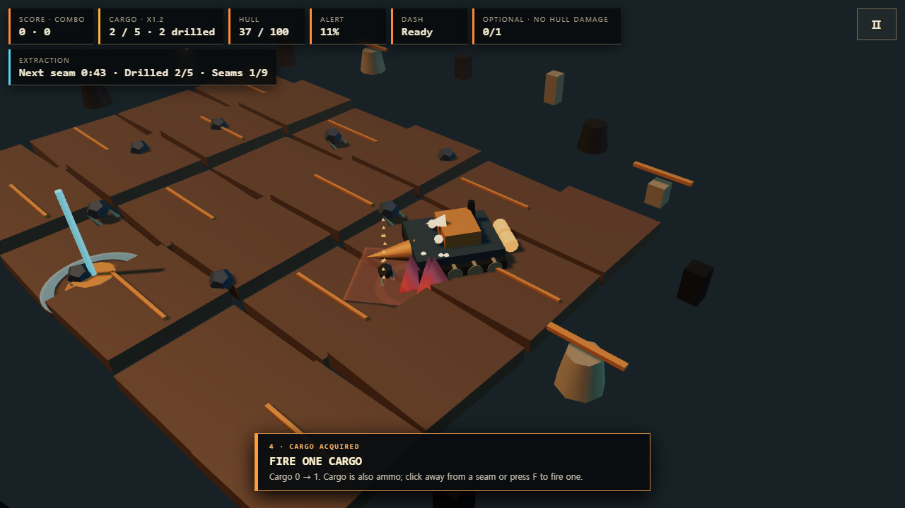
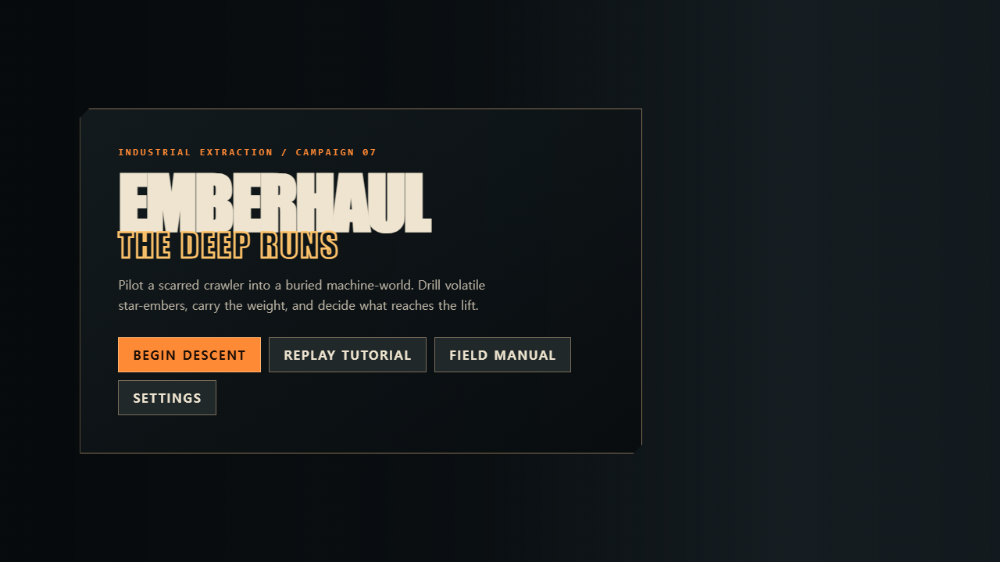

채굴과 전투
이동·조준·홀드 채굴, 화물 발사, 열 대시를 하나의 실시간 루프로 연결했습니다.
LOCAL BUILD THREE.JS · WINDOWS LAUNCHER
산업용 크롤러로 광맥을 뚫고, 같은 화물을 적에게 발사할 탄약으로 쓰며, 할당량을 확보해 탈출하는 추출 액션 캠페인입니다.

각 계약의 필수 광맥을 채굴하고 할당량을 맞춰 리프트를 엽니다. 화물은 진행 자원이면서 한 발씩 소비되는 탄약이어서 전투의 안전과 탈출 조건이 같은 선택에 묶입니다.
이동·조준·홀드 채굴, 화물 발사, 열 대시를 하나의 실시간 루프로 연결했습니다.
32개 계약, 7개 지역, 6개 보스와 업그레이드·결과·저장 흐름을 갖춥니다.
한국어/영어 화면과 좁은 화면 터치 조작, 튜토리얼 재생 및 필드 매뉴얼을 제공합니다.
지형·크롤러·화물열차·적·경고 링을 프로젝트가 작성한 Three.js 지오메트리로 표현합니다.
